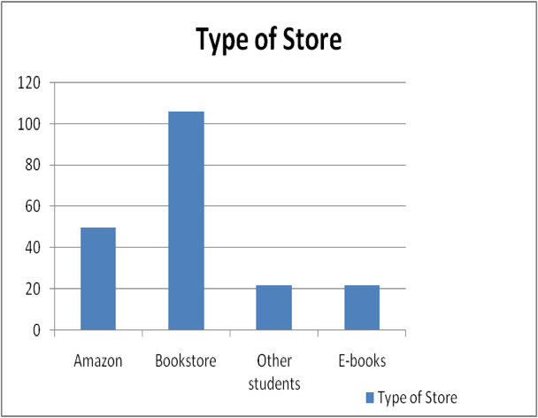
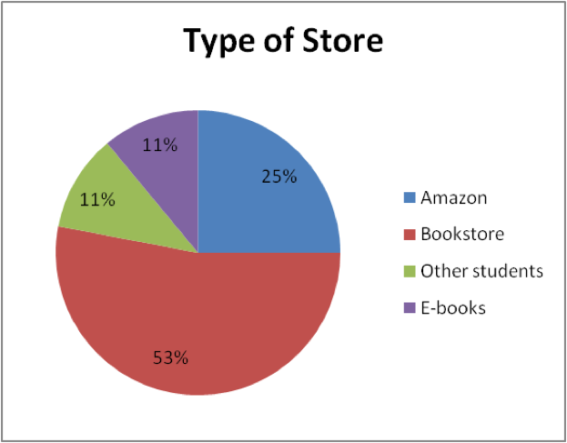
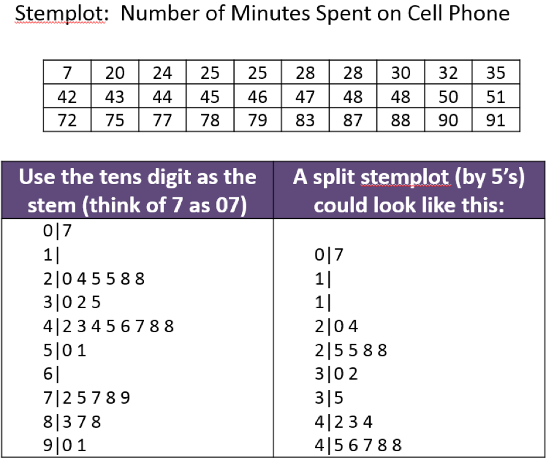
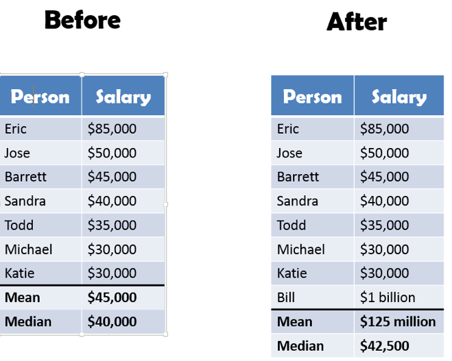
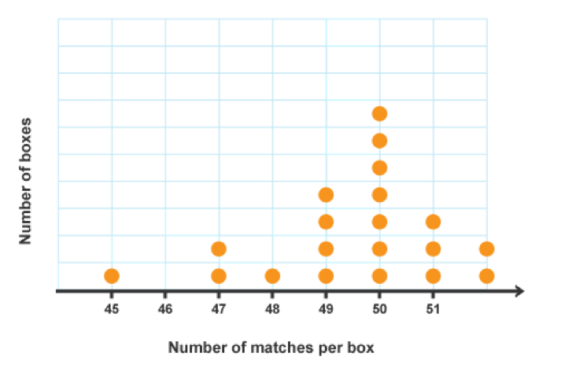
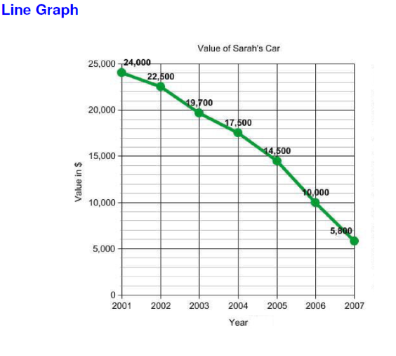
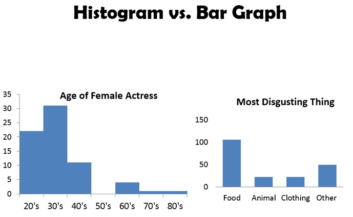
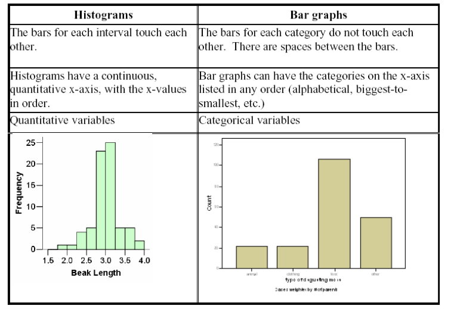
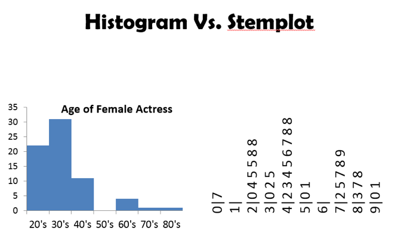
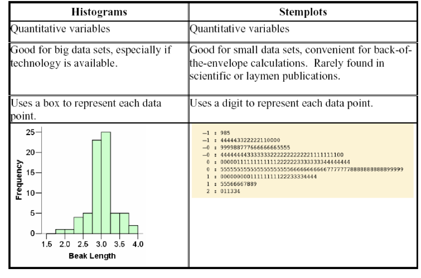

Lecture 36
Qi Wang, Department of Statistics
Nov 15, 2018
| Place of Purchase | # of Students | % of Students |
|---|---|---|
| University/Follett’s Bookstore | 106 | 53% |
| Amazon.com or Half.com | 50 | 25% |
| Previous students | 22 | 11% |
| Purchase e-book | 22 | 11% |
Typically with bar graphs, the y-axis represents the frequency (# of observations) in the categories. Elements can give multiple answers or no answer.Pay attention to the axes. 
Pie Chart is circular graph in which the relative size of the “slice” represents the percents or proportion of responses in that category. Percents must add to 100%. Each element/subject is allowed to give only one answer. 
Stemplot or Stem-and-leaf plot is a technique that orders quantitative data points and provides insight about the shape of the distribution. To make a stem-and-leaf plot, the last digit of the number is the leaf and the rest of the number is the stem. Leaves are arrange in ascending order on the stem. Additionally, any stem that is not used, but is within the range of the data, is kept in the plot.
DATA SET is: $1, 3, 5, 7, 12, 15, 17, 19, 21, 21, 21, 30, 33, 39,$ and $56$. Create a stem-and-leaf plot of the data.
Histogram is used for large amount of data, displays a count (frequency distribution) or percent or relative frequency distribution (probabilities) QUANTITATIVE DATA ONLY!!!! It is constructed by placing the class intervals on the horizontal axis and the frequencies, relative frequencies, or percent frequencies on the vertical axis. When making a histogram, you need to pick an adequate number of classes (or, equivalently, an appropriate width of the interval for each class).
Suppose there are 7 people eating in a diner. We ask “what is their income/ salary? Then Bill Gates walks into the diner and we add in his salary.
which measure is more representative of the group after Bill Gates arrives?
Since the median is relatively unchanged by a few very large or very small measurements in the data set, we say that the median is resistant. The mean is non-resistant.
Dot Plot is a graphical device that summarizes data by the number of dots above each data value on the horizontal axis.
Line Graph is a graphical device that summarizes time series data.Time/date is usually on the horizontal axis and the value of the measured variable on the vertical axis. Look for upward or downward trends. Look for seasonal patterns




What type of graph would be appropriate in order to answer the following questions?